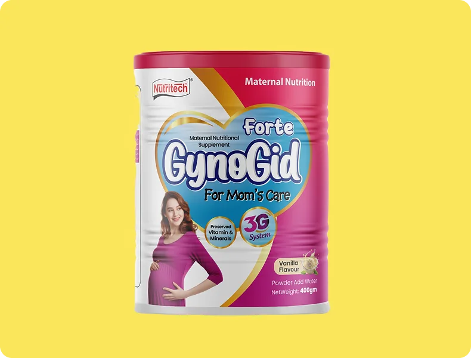

GynoGild Forte
Maternal Nutritional SupplementFor Mom's Care with preserved vitamin and minerals.
3G SystemThoughtful nutritional support for mothers through every important stage of care.
Explore the range ↓Nutrition for mothers deserves the same care and attention as every other beginning. Delux Foods offers a considered maternal nutritional supplement for everyday support.

A maternal nutritional supplement with preserved vitamins and minerals, a 3G system, vanilla flavour, and a 400g net weight.
For Mom's Care with preserved vitamin and minerals.
3G SystemA familiar flavor prepared for a simple daily routine.
Net Weight: 400gTalk with the Delux Foods team to learn more about GynoGild Forte.